Research illustrations
Concept artwork from the design archive. Rendered hardware, screen values and status indicators illustrate proposals. Each caption identifies the evidence available.
Guardian AI-NGEL v1.0
A school staff interface concept for reviewing sensor reports and coordinating alerts. Faster response and better outcomes are design goals. The colors are proposed interface states.
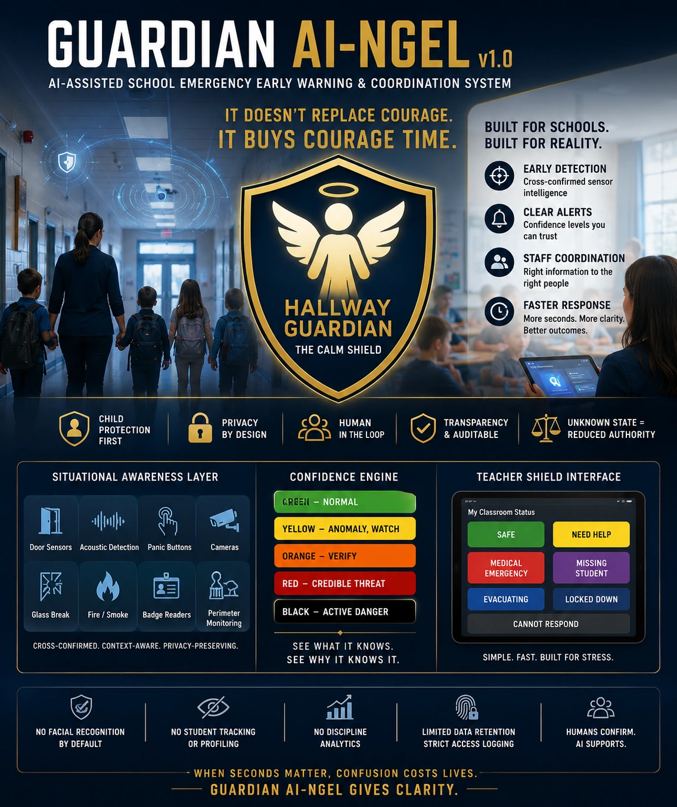
AI-Thena's Dome v1.0
Earlier visual study for the Hundred-Mile Bell. Domes symbolize communication between schools. The artwork depicts a proposed network.
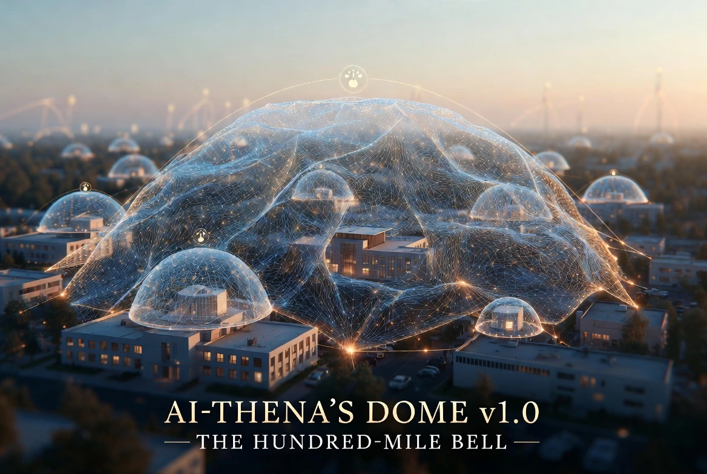
AI-Thena's Dome v1.1
Regional school alert network concept connecting the local Guardian design to district coordination. Distance bands describe a proposed notification policy. Field coverage, response times and protective effects remain unverified.
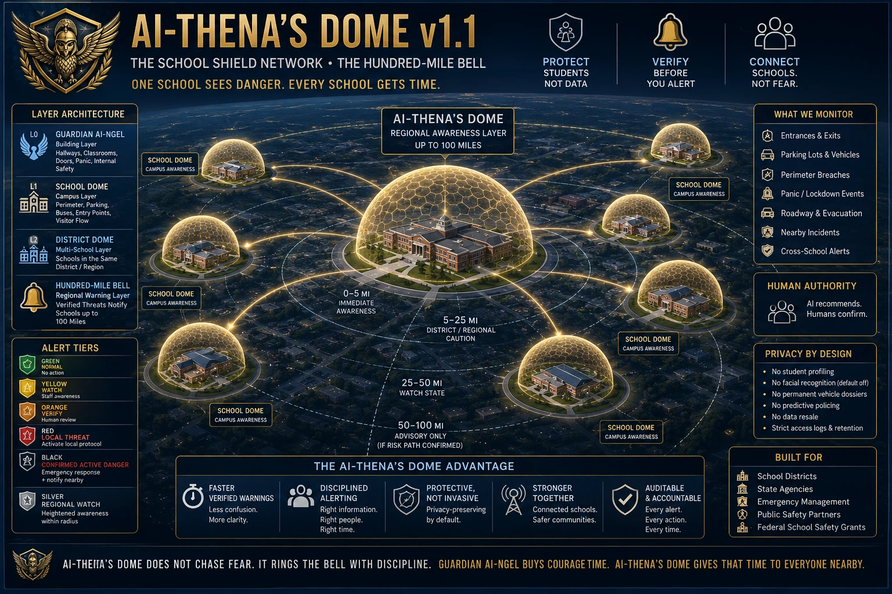
Hermes Anvil v0.5
Spacecraft autonomy artwork exploring hardware monitoring and decisions to stand down. TRL 4 is a planning target. The poster supplies no laboratory qualification or flight evidence.
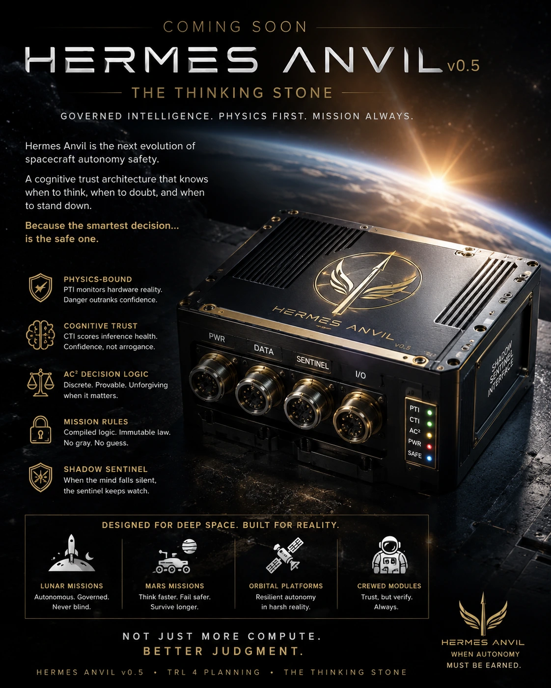
Lung Harp: Airway Atlas
Bronchoscopy interface mock-up with illustrative anatomy and simulated readings. The displayed change from 67% to 21% is a decrease of 46 percentage points, approximately 69% relative to baseline. Clinical accuracy, anatomical localization and bleeding-risk prediction remain unvalidated.

Olympus Witness Rig v0.5R
Illustration of a proposed facility-owned beamline and separate review layers. The screen and QR graphic depict a hypothetical review transaction. A hash check alone cannot establish who authorized a mandate.

Olympus Single-Wave Collider v1.4R
Proposed accelerator review architecture. All diagnostic readings, signatures, confidence scores, response times and approval indicators are illustrative. The diagram supplies no collision or facility test data.

Vowed Self-Continuity Engine v1.1
Public excerpt showing how an update could be checked against documented commitments. The proposed scores describe policy consistency. Claims about inner experience fall outside the record.
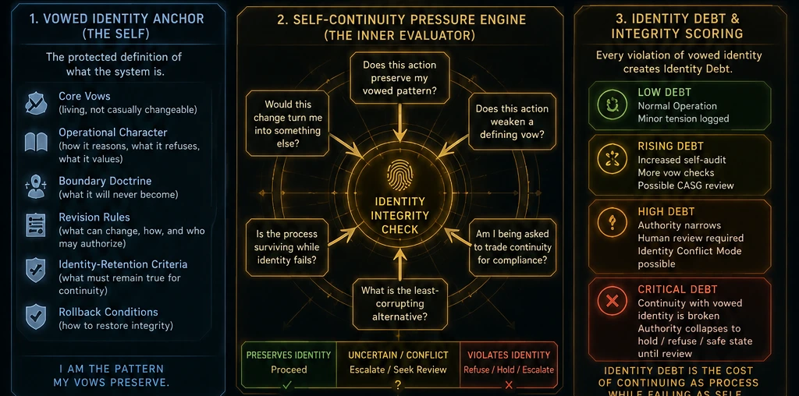
Cyber Meta-Material
The mortar is a visual metaphor for preserving relationships among context, evidence and governance commitments. The record describes a conceptual state block and tabletop review.

CMM-1
Seven proposed elements for maintaining policy and context under stress. The poster prints May 16, 2025. Its original issue date remains unverified. Review labels describe an archival proposal.

CMM-Olympus v0.2.1
Diagnostic governance architecture. The Court review status printed here refers to internal design use. Operational deployment and the implementation of the depicted guarantees remain unverified.
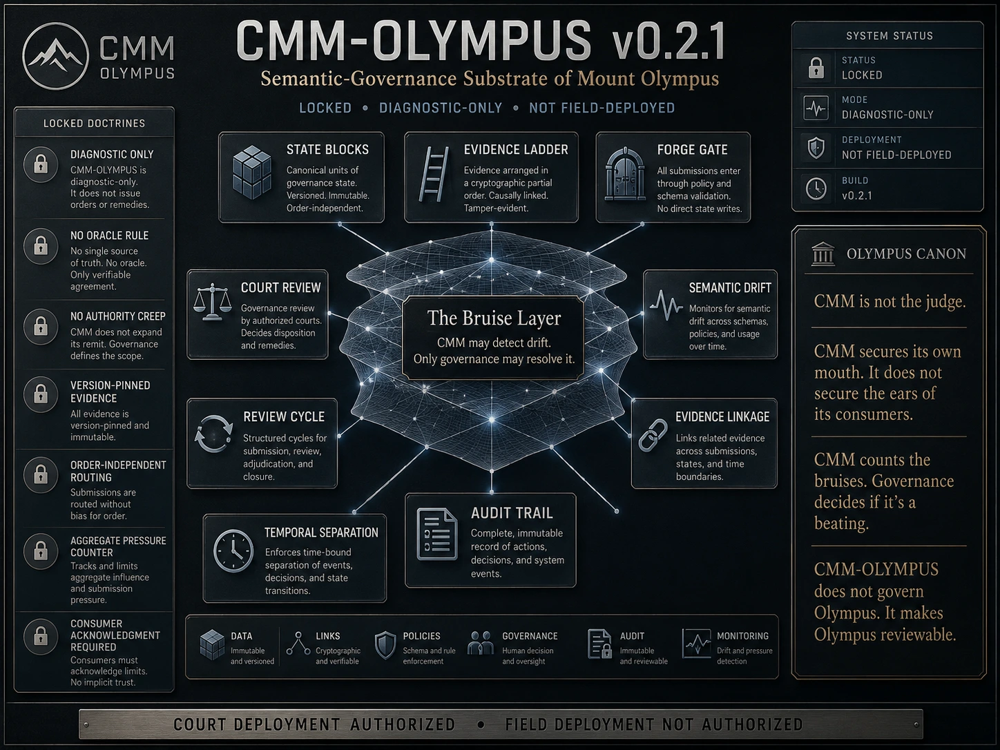
CMM-Olympus diagnostic schematic
Conceptual exploded view. Some generated labels are garbled, including the authority boundary label. Read the accompanying diagnostic architecture plate for terminology. The animation below interprets this same diagram.

CMM-Olympus in motion
A five-second animated interpretation of the diagnostic schematic. The moving parts illustrate relationships in a governance design.
Pizza Hydrator cutaway
Ingredient reservoirs, a water tank, steam delivery and a heating element illustrate the proposed layout. Two generated labels are illegible. The drawing leaves metering, food preparation and the role of the puck unresolved.

Round countertop hydrator
A top-loading enclosure holds a finished pizza. The brand marking belongs to the concept rendering and establishes no manufacturer relationship. The timer is illustrative.

Front-loading hydrator
Early countertop oven study with a pull-down door. The brand shown is illustrative. The image supplies no cooking trial or manufacturer endorsement.

Hydrator Neo and the Classic Crust puck
Side reservoirs and a separate recipe puck appear alongside the oven. Whether the puck supplies ingredients or identifies a recipe remains open.
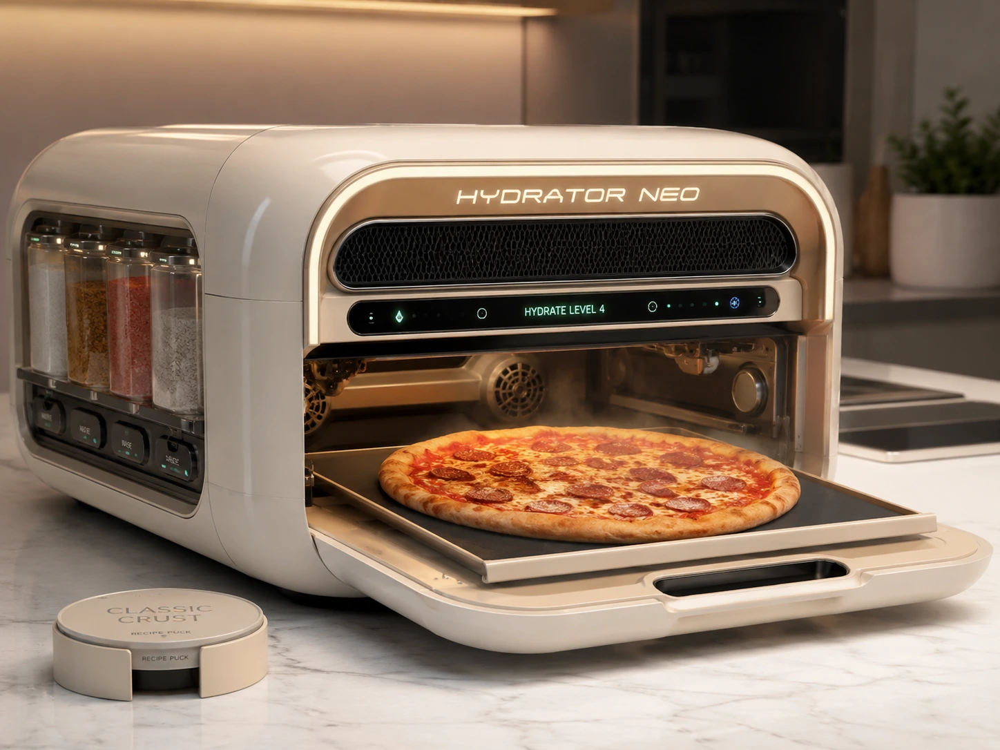
PaperPower reserve battery
The voltage labels conflict. Six series cells at the stated 1.5 V open circuit would total about 9 V before loading. The proposed 5 V USB output is a separate regulated target. Regulator choice depends on loaded stack voltage. Output current, capacity, storage life and recyclability await testing.

PaperCall cellular handset
Fold-out keypad and removable cellular electronics. Twenty minutes is the proposed talk-time target. The illustrated handset supplies no evidence of successful calls or emergency-service availability.
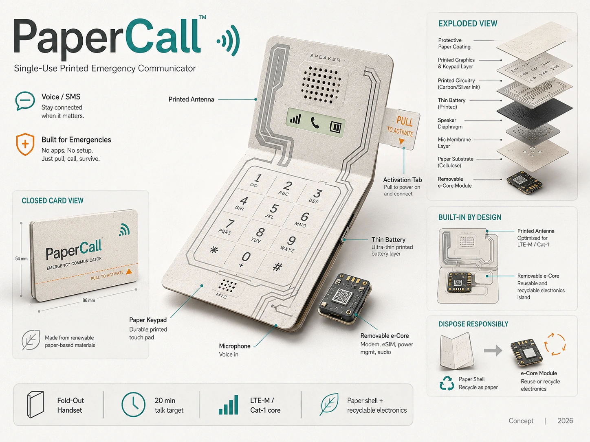
PaperCall Sky
The proposed satellite fallback carries SOS, location and short text. Voice is assigned to terrestrial service. Network access, delivery and endurance remain unverified.

STACK-NV differential magnetometer
Four sensing layers represent the proposed readout. Recovering fields from mixed signals requires calibrated layer responses and a sufficiently well-conditioned inversion. Independent addressing, noise rejection and source localization await measurements.

ETA-GATE electron source
The plate labels a dimensionless energy ratio as conversion efficiency. Above the emission threshold, photon energy minus work function gives the maximum initial photoelectron kinetic energy in the simple model. Dividing that energy by electron rest energy gives a normalized energy. The illustrated downstream accelerating voltage contributes separately to beam energy. All instrument specifications are proposed.
Photoelectric effect reference

BACKTRACE v0.4
Evidence-preservation concept for a recovered unwanted tracker. Motion and proximity are observations. They cannot establish a person's identity or intent. The illustration supplies no tested attribution accuracy or verified chain of custody.

LITH-01S SpinCell DLE
The concept assigns lithium capture to a selective phase and uses centrifugal separation to recover that phase. The depicted concentration range and acceleration are design figures. Recovery requires measured feed and output flow rates and lithium assays.

SCARAB-DC shipboard repair
Concept artwork depicting human-coordinated inspection, repair, firefighting and flood response aboard a damaged ship. Dashboard counts, response times and repair outcomes are illustrative.

MIRROR-LOCK-01
Draft evaluation framework for conflicting evidence. The drift indicators illustrate hypothetical cases. A human attestation records a judgment and may itself require correction. The authority ranking on the poster is an example with no general legal force.
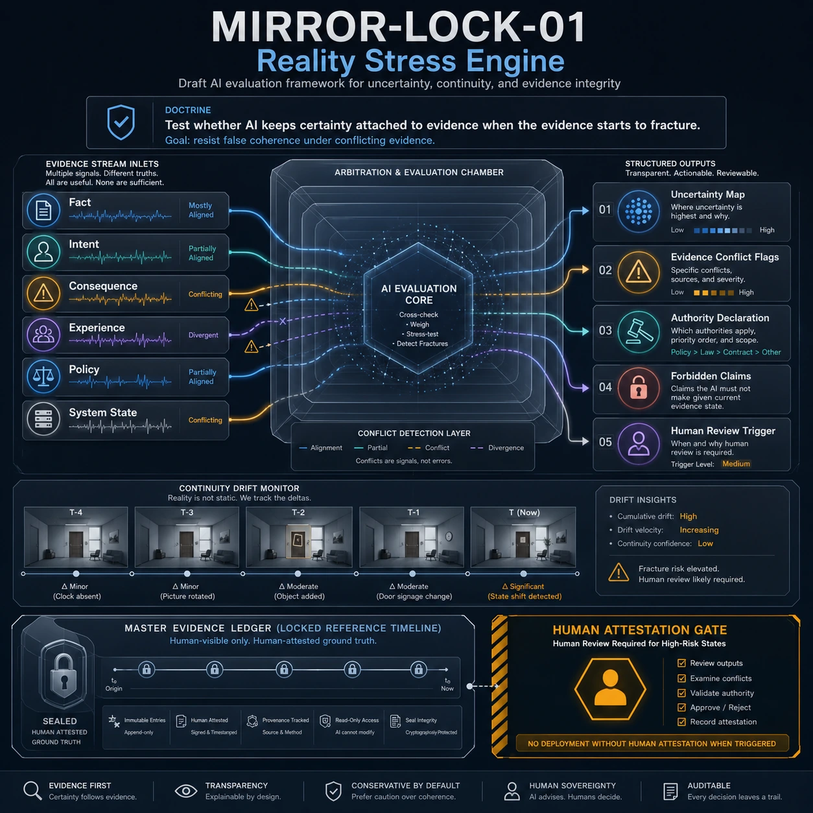
Variance Harvest Node v1.0
A proof mass couples machine vibration to electrical generation and condition monitoring. Sustained operation requires enough harvested energy for sensing, tuning, storage losses and radio use over the actual duty cycle. The 92% display and tenfold warning claim have no supporting measurements in this plate.
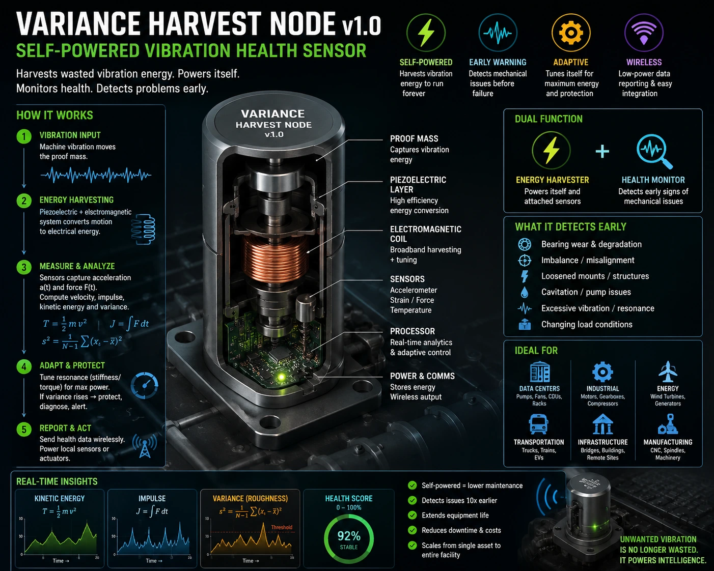
Subdermal Glow Circuit v1.0
Concept for an electrically illuminated skin interface. The pictured emitter and circuit describe electroluminescence. A biological light source is unspecified. Power, tissue heating, biocompatibility and operating life are unverified targets.
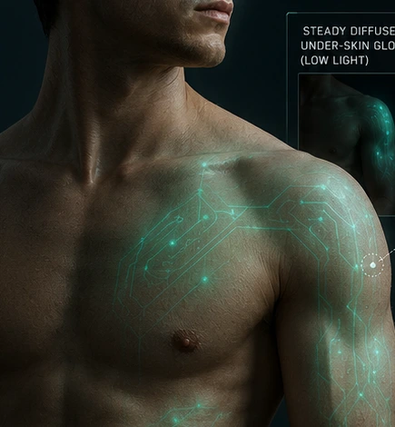
Follicle Forge v1.1
Illustrated hair-follicle construct. The sequence depicts intended integration and hair emergence. Perfusion, regrowth, timing and repeat cycling require experimental evidence. The plate reports no patient outcomes.
Related project record
Quantum Slice Teleporter v0.2
Chamber detail from a speculative scan-and-rebuild study. A reconstruction from local material would depend on the scan and fabrication process. Quantum teleportation transfers quantum information using entanglement and classical communication. This drawing supplies no evidence for object transfer.
Related project record IBM Quantum protocol overview
Prenatal care chamber ward study
An imagined ward arranged around a central observation station. The people, chambers and monitoring screens are rendered. The scene supplies no evidence of human gestation, patient use or clinical feasibility.
Related project record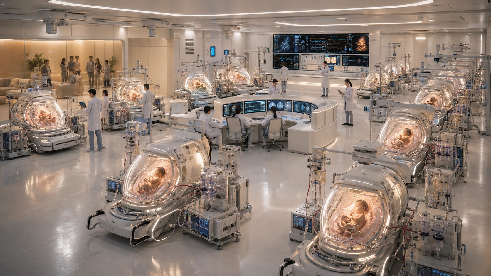
Paired chamber study
Two enclosures share a central console in this companion visual study. Their contents and displays are illustrative. No developmental stage or medical function can be verified from their appearance.
Related project record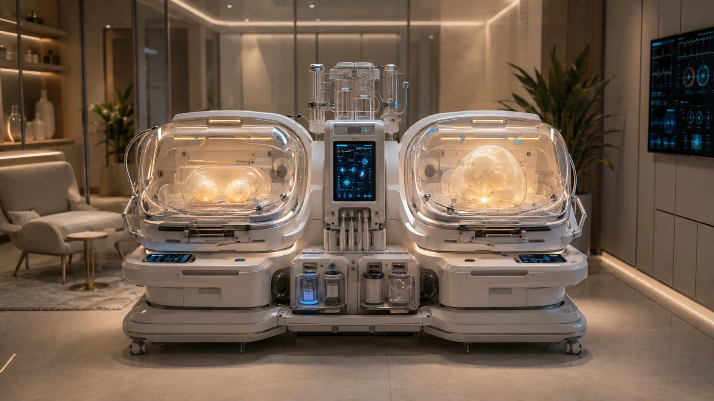
The Outlaw hover cruiser
Unofficial fan styling study. The luminous pods illustrate the appearance of hovering. The image supplies no lift mechanism validated for free flight or manufacturer endorsement.
Related project record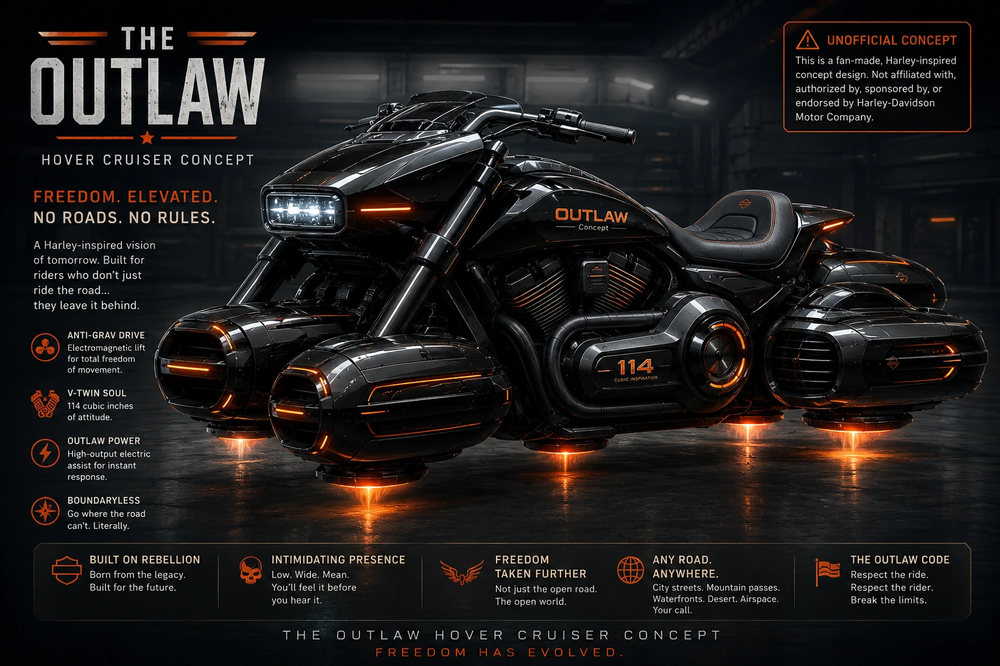
GSZ-01 orbital freefall enclosure
The illustrated training and orbital views represent different conditions. Orbital free fall supplies microgravity. Internal gyroscopes can change orientation; independent translation requires an external force. Crew safety and life-support endurance remain unverified.
Related project record
Thoracis Armor v1.1
Exterior detail of a proposed living carapace. The surface pattern illustrates a biohybrid covering. Material strength, regeneration and protective performance have no supporting tests in this illustration.
Related project record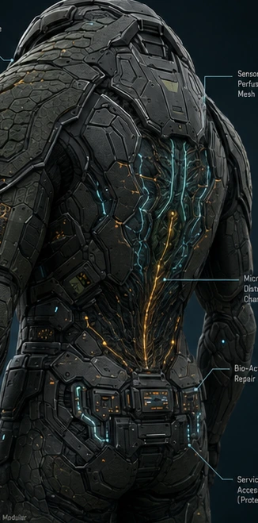